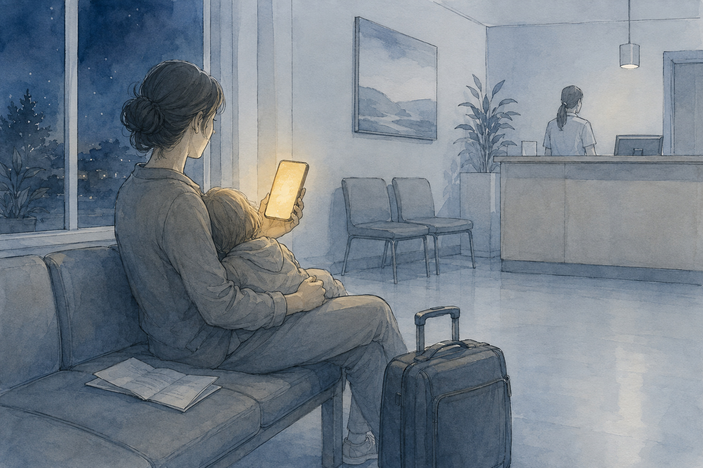
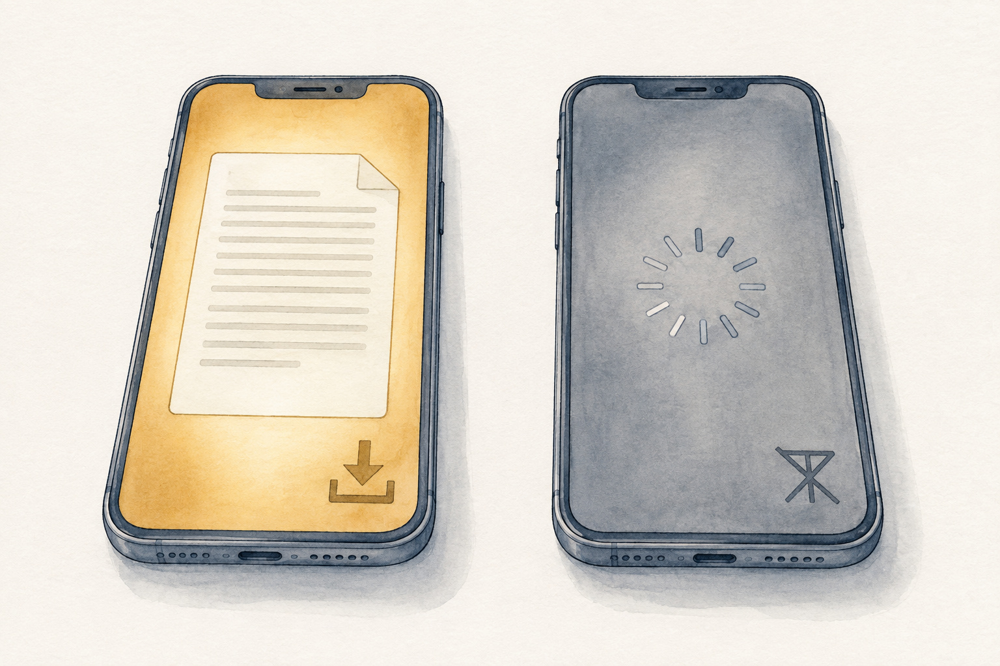

Travel Insurance Documents: What to Save Before You Go
Travel Document Vault

Key Takeaways
- Save your full policy documents, policy number and emergency assistance number (not the sales number).
- Save copies offline, test that they open and carry a paper backup separately from your passport and phone.
- Check when your insurer requires contact before treatment; get emergency medical help first and contact the insurer as soon as possible.
- Keep receipts and reports, and ask your insurer which documents it needs for a claim.
- Read your policy's key sections quickly by focusing on coverage limits, exclusions, and conditions.
We'd save your travel insurance documents offline and pack a paper backup before leaving, with your policy number, proof of cover and emergency assistance number together. Here we'll cover what to save, testing offline access and reading claim instructions, including finding out when the assistance line is open.
What Actually Happens When You Need Your Insurance
Picture yourself at a clinic abroad, looking for your policy number. It's in an email, but you haven't saved the attachment offline and there's no connection. Having a local copy and a paper backup saves you that search.
Your policy details are a starting point, not a guarantee of treatment or payment, so ask the insurer and treatment provider what they need, including evidence for a claim.
Keep your documents somewhere you can find them under pressure. A missing copy doesn't itself cancel your cover, but you'll still need to contact the insurer and gather the evidence it requests.
Can't Find Your Policy Documents? Start With Whoever Sold You the Cover
Your policy documents sit with whoever sold you the cover, so start there. Search your inbox for the insurer's name, or the broker or comparison site you bought through, together with the word "policy". If you set up an account when you bought it, log in to the insurer's website or app too. You're looking for three things:
- The policy wording: the full terms, including exclusions and how to claim
- The schedule or certificate: your name, policy number, travel dates and level of cover
- The emergency assistance number, including a number that works from abroad and its operating hours
If you don't remember buying a policy at all, check your bank account. The Financial Ombudsman Service describes a packaged bank account as a current account that charges a monthly fee in exchange for extra benefits, travel insurance among them. In that case the bank is usually the first place to ask, so try its app, website or helpline.
UK example: the Foreign, Commonwealth and Development Office advises taking your policy details with you, including the policy number and your insurer's emergency assistance number. It also suggests sharing them with the people you're travelling with and family at home. If you still can't find anything, call the insurer, or the bank for packaged cover, and ask them to send the documents again before you fly rather than after something goes wrong.
The Five Documents You Must Save Before You Fly
For quick reference, keep these five items together, with the policy wording alongside your schedule or certificate and any separate terms or medical declarations:
- Full policy document (the PDF)
- Policy number (extract it - write it down separately too)
- Emergency assistance number, its operating hours and any number for calls from abroad
- What is covered section (coverage limits for medical, baggage, cancellation, etc.)
- Key exclusions and conditions (including pre-authorisation requirements)
Keep your policy number handy, with your name and travel dates alongside it for reference. Before you go, it's worth a call to your insurer. Ask what identification and documents it needs if you lose the policy.
Label the emergency assistance and customer service numbers clearly, and find out their operating hours and whether they work from abroad. Don't assume every policy provides a round-the-clock service.
Where to Store Them So You Can Actually Access Them
Email can work offline if you've saved the message and attachment in advance and your email app supports it. Rather than relying on an attachment you've only viewed online, try opening the full file without a connection.
Instead, store your documents in three places for redundancy.
Offline on Your Phone
Download the PDF directly to your phone so the full policy is saved there. Save screenshots of critical information, including the policy number and emergency line. We'd test both before packing, with WiFi and mobile data off, opening the full document and screenshots in your chosen apps.
We'd label their folder Insurance - this trip, then practise finding it before leaving.
Cloud with Offline Access
When you save a cloud backup, explicitly mark the files for offline use on your phone and test them without a connection. Retrieving the cloud copy on another device means having internet access and a way to complete account verification without the lost phone.
Paper Backup Away from Your Phone
Carry a paper copy of your insurance documents separately from your passport and phone, because a photo kept only on an unavailable phone won't help. Find out whether digital copies meet your destination, insurer and treatment provider's document requirements.
A handwritten card with your policy number, insurer name and emergency assistance number is a useful extra for quick reference, though it doesn't replace any documents you're asked to carry.

Document Storage Comparison
| Storage Location | Access Without Internet | In an Emergency | Backup if Phone Lost |
|---|---|---|---|
| Phone (offline download) | Offline once downloaded locally | Test opening before travel | Lost with phone unless backed up |
| Cloud drive with offline access | Yes, if downloaded previously | Save offline; test before travel | Needs internet and account verification |
| Offline if supported and saved | Needs connection unless saved offline | Needs access to email account | |
| Physical copy (laminated card or printout) | Yes, if carried with you | Useful without your phone | Keep separately from passport and phone |
| Encrypted app (e.g. Travel Document Vault) | Yes, stored locally on phone | Test access before travelling | Encrypted and private; cloud backup optional |
Travel Document Vault stores your passport, visa, insurance policy and other document scans encrypted on your phone. View them offline without an app account, and share or export copies when you need to. Pro adds optional encrypted backup to your own iCloud or Google Drive. Download it free on the App Store or Google Play. Pro is a one-time purchase, with no subscription.
Common Claims Mistakes and How to Avoid Them
Alongside saving your documents, take time before you travel to read the claim instructions for each of these situations:
Medical Claims: You Did Not Get Pre-Authorisation
Your policy sets out when you need to contact the insurer and get approval for medical treatment, so read those rules before you go. Missing a required authorisation may affect a claim. In a medical emergency, call local emergency services first, then contact the insurer as soon as possible.
Even with an authorisation number, you may still need to pay upfront rather than have the hospital bill your insurer directly. Ask how payment will be handled and keep the medical reports, invoices and receipts.
Save the insurer's emergency assistance number before leaving. When you call, give the hospital or clinic details and ask what approval and paperwork are needed. If you can't call, ask someone travelling with you to contact the insurer on your behalf.
Baggage Claims: Missing the Reporting Requirements
Theft, loss and damage each need a separate look at your policy's reporting instructions; a police report and an airline baggage report aren't necessarily interchangeable. Ask which reports and supporting documents you need, who should issue them and what deadlines apply.
Action: If your bag goes missing, report it to the airport lost and found desk. If it's theft, file a police report the same day, and get a copy to send with your claim.
All Claims: You Do Not Have Receipts or Proof
Insurance reimburses based on what you can prove. If you buy a replacement phone after yours gets damaged, keep the receipt. The same applies to a last-minute hotel after a cancelled flight (keep the booking confirmation and payment receipt) or to medical treatment (keep the invoice and prescription).
Keep every receipt, physical originals and digital copies both. Photograph the paper ones as backup, and make sure you can still retrieve an emailed receipt months later.
Cancellation Claims: You Did Not Read the Fine Print
If your policy includes cancellation cover, read its covered reasons, exclusions and evidence requirements before relying on it. Whether illness, a change of mind or bad weather qualifies depends on the terms, so ask your insurer how they apply to your situation before cancelling.
Action: Before cancelling, check your policy's coverage details. If you think your reason qualifies, call your insurer before cancelling your flight. Get written confirmation of coverage from them before proceeding.
How to Read Your Policy and Find What Matters
The topics below give you a place to start, though headings vary and details can sit in separate schedules or endorsements. Read the full terms before relying on your cover, and ask the insurer about anything you can't find, including claim deadlines and assistance hours.
| Section | What It Tells You | Why It Matters |
|---|---|---|
| Coverage Summary or Schedule | Payout limits for medical, baggage, cancellation, and the rest | Know your maximum claim amount for each type of loss |
| Exclusions | What is not covered (pre-existing conditions, high-risk sports, etc.) | Read exclusions; ask if unsure |
| Medical Conditions | Any restrictions on coverage for health issues | Check if your conditions are covered |
| How to Make a Claim | Claim steps; confirm deadlines and evidence | Know exactly what to do when you need to claim |
| Emergency Assistance | Confirm hours, services and repatriation cover | Know who to call in a crisis and what they will do |
Use the table of contents to find these sections without reading every page. Highlight the coverage limits and the exclusions, then screenshot those pages for quick reference.
Before You Leave: A Simple Preparation Checklist
Here is what to do before your flight:
- Download your insurance policy PDF to your phone
- Screenshot the policy cover page (with policy number) and emergency contacts page
- Save both to a folder on your phone with a label you will recognise at a glance (something like "Insurance - this trip")
- Write down your emergency assistance number and check its operating hours
- Read the "How to Make a Claim" section so you know the process if needed
- Carry a printed policy backup separately from your passport and phone
- Save a cloud backup, test offline access and prepare account verification that doesn't depend on your phone
Before you pack, try finding each copy. Turn off WiFi and mobile data once more, then open the saved files to make sure they're available offline.
Keep your own passport and visa dates on your phone, with reminders before they expire.
Before you rely on this: it's a blog, not an official source. Rules and details change, and your situation may be different. We check what we publish, and we can still be wrong or out of date. If something here matters to your plans, confirm it with the authority that handles it before you act.
Official sources
Frequently Asked Questions
Do I need to carry my physical insurance policy when I travel?
A phone copy alone may not meet your destination, insurer and treatment provider's document requirements, so find out what they need before you leave. Keep your policy details accessible offline, with a paper backup separately from your passport and phone. Your policy number and emergency assistance number should be handy too.
What should I do if I cannot reach my insurance company's emergency line abroad?
For a medical emergency, call local emergency services first. Look in your policy for a number that works from abroad, and ask a travelling companion to help contact the insurer. Keep receipts and medical reports, contact the insurer as soon as possible and find out its claim deadline. For non-emergency treatment, read the policy's approval requirements before proceeding; missing required authorisation can affect the outcome.
What should I do if I lose my insurance policy while travelling?
Your policy number and emergency assistance number are useful starting points. Use any backups you've saved, then ask your insurer to confirm your cover and explain how to obtain replacement documents. Ask what identification and evidence it needs for assistance or a claim, as the policy number alone may not be enough.
What sections of a travel insurance policy do I actually need to read?
Start with benefits, limits, excesses, exclusions, medical conditions and claim instructions, using the contents page to find them. Headings and document layouts vary. You'll also need the claim deadlines, emergency assistance number, its operating hours and the services included. Read the full terms, and ask your insurer about anything unclear.
Does travel insurance work in every country I travel to?
Cover isn't automatically worldwide, so ask your insurer whether your policy covers every country on your itinerary, including transit stops, your travel dates and planned activities. High-risk activities (mountaineering, professional sports) may have separate exclusions.